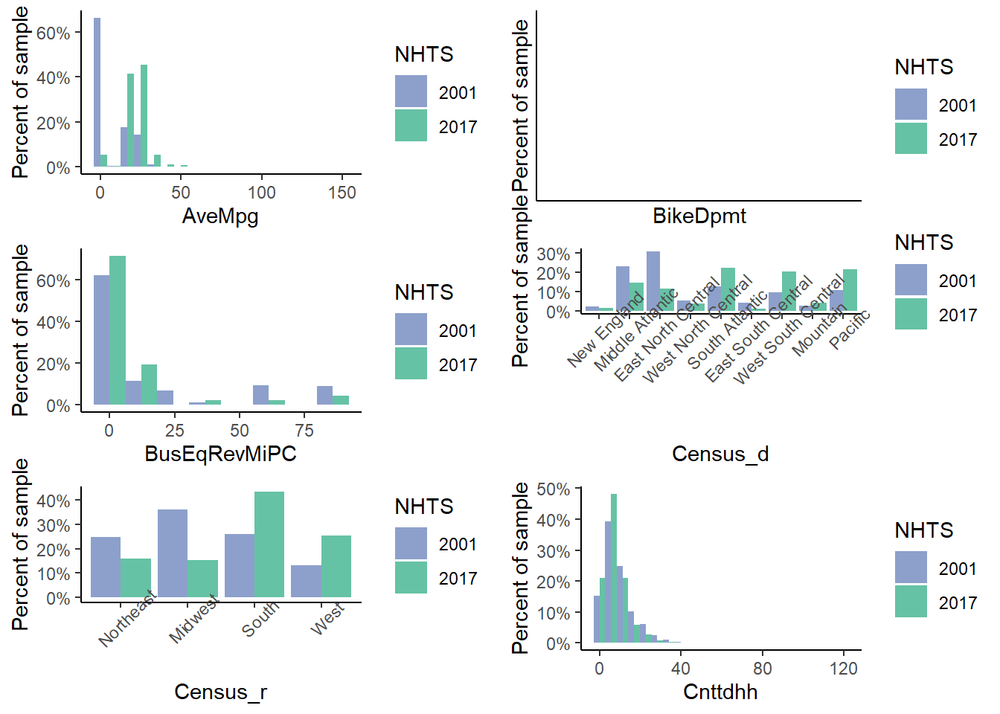
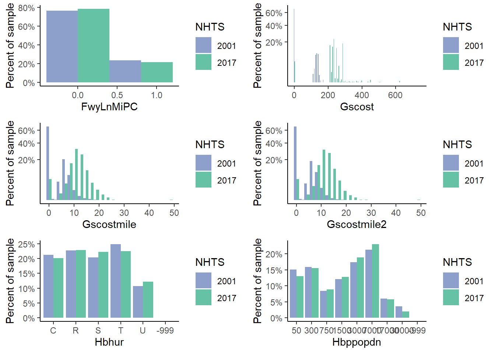
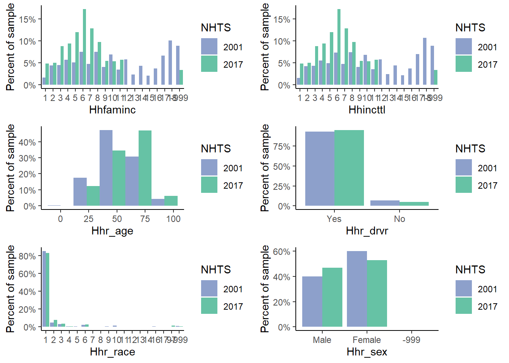
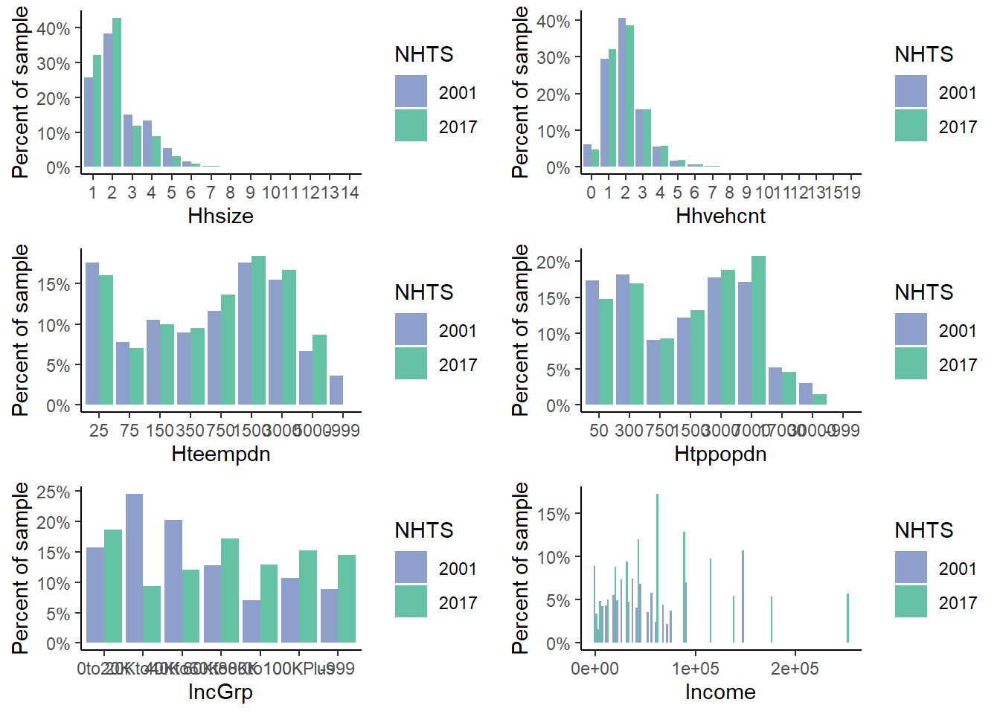
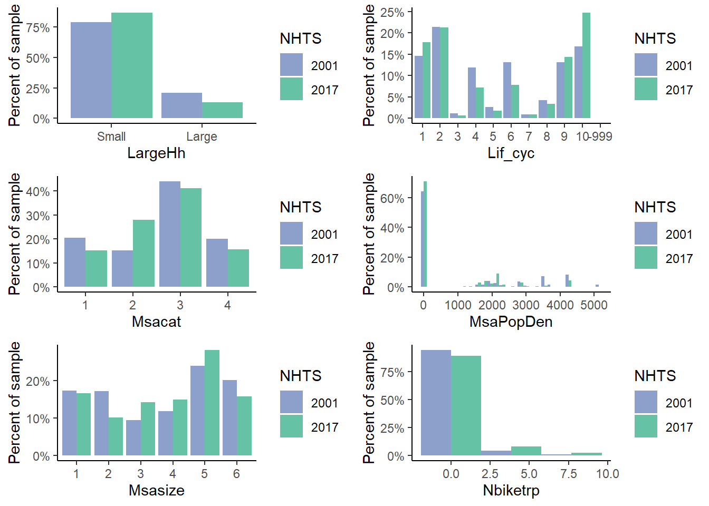
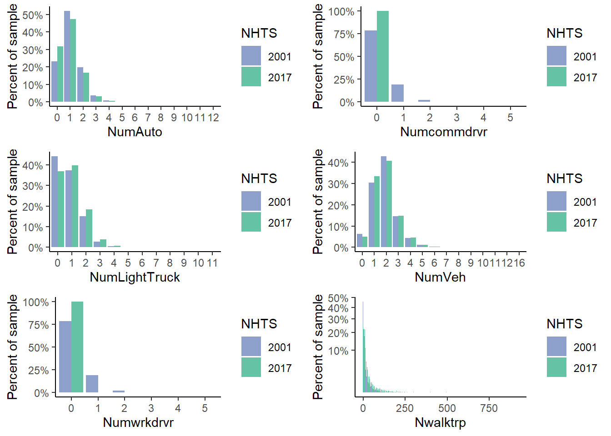
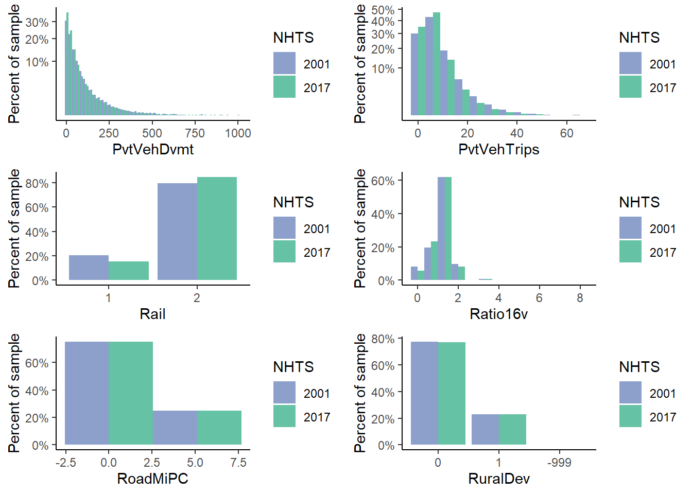
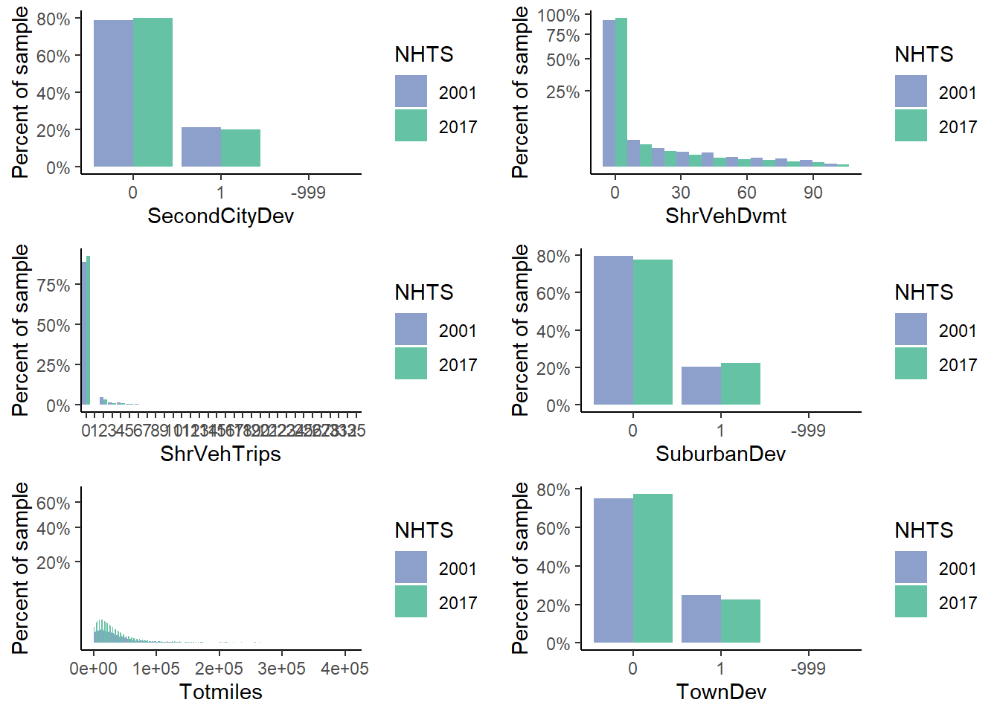
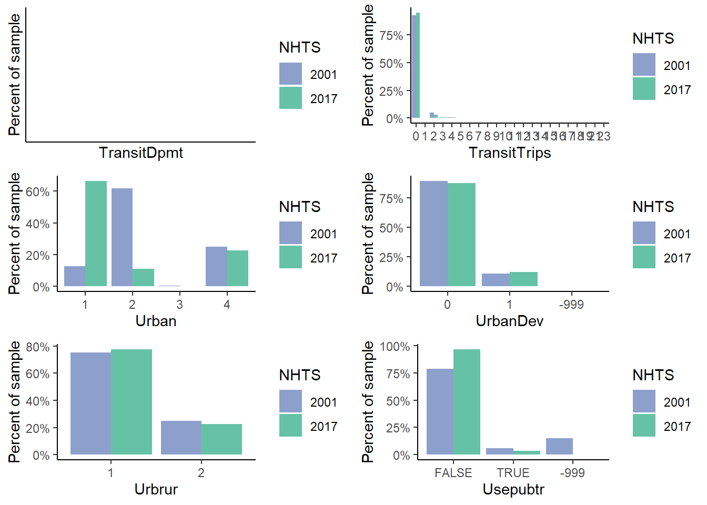

Chapter 1 VENHTS Module Guidance
1.1 Introduction
The VENHTS module is a modified version of the original VE2001NHTS module, which provides three critical changes.
- Includes a processed 2017 version of NHTS dataset for VisionEval (VE).
- Refactors VisionEval to use the more generic VENHTS module rather than the 2001 specific module.
- Generalizes the data ingestion process to make switching between 2001, 2017, and potential future versions more easily.
This document provides an brief overview of how the module functions and how the 2017 data are made backwards compatible with existing 2001 NHTS data framework in VisionEval.
While this module does not “future proof” any future NHTS data releases, or third-party household travel surveys, the purpose is to provide a transparent documentation of methods for users if they wish to format future NHTS data or inject their own datasets.
1.2 Overview
A key element for users to understand about VisionEval is that modules can have multiple dependencies both upstream, downstream, and in parallel throughout the VisionEval ecosystem. Data in the VENHTS (previously VE2001NHTS) are used in several downstream VE packages. Simply swapping out the data in a module does not only affect that module, but can have cascading impacts if the data are insufficient in subsequent models. Conversely, to have changes be reflected in downstream modules, they must also be re-built using the new upstream data (see build process [LINK]).
Below is a general diagram of how NHTS data feeds through the VE ecosystem.
While most of the VisionEval ecosystem likely uses NHTS data or a derivative at some stage, there are currently only four primary modules that NHTS data are directly fed into:
- VEHouseholdTravel
- VEHouseholdVehicles
- VEPowertrainsAndFuels
- VELandUse
This narrows the number of “entry points” that need to be closely monitored to ensure successful building using the new data.
1.2.1 Module Contents
The VEHNHTS module contains a single R script MakeNHTSDataset.R. This R scripts is organized into 5 primary stages:
Function Definition
Fetching of NHTS Data from web
Load Metropolitan Road and Transit data
Process Datasets
Save Datasets
In general, the script is largely the same as the previous Make2001NHTSDataset.R, but has been extended and reorganized to allow users to switch between data inputs using the NHTSYEAR parameter.
1.3 Pre-processing of NHTS 2017 for VisionEval
For the most part, most columns remain intact between 2017 and 2001 NHTS. However, there are many derived features (e.g., aggregate number of persons at the household level), relabeled features, removed redundancies, and occasionally remove altogether. The table below provides an overall summary “crosswalk” of NHTS 2001 to 2017 columns. For further data attribute details, see the 2001 and 2017 NHTS codebooks:
1.3.0.1 2001 to 2017 Column crosswalk
| File | NHTS2001 | NHTS2017 | Notes |
|---|---|---|---|
| veh | HOUSEID | HOUSEID | |
| veh | VEHID | VEHID | |
| veh | BESTMILE | BESTMILE | |
| veh | EIADMPG | FEGEMPG | |
| veh | GSCOST | GSCOST | |
| veh | VEHTYPE | VEHTYPE | |
| veh | VEHYEAR | VEHYEAR | |
| veh | VEHMILES | ANNMILES | |
| day/trip | HOUSEID | HOUSEID | |
| day/trip | TDCASEID | TDCASEID | |
| day/trip | VEHID | VEHID | |
| day/trip | VEHUSED | VEHID | |
| day/trip | TRPHHVEH | TRPHHVEH | |
| day/trip | PERSONID | PERSONID | |
| day/trip | NUMONTRP | NUMONTRP | |
| day/trip | TRPTRANS | TRPTRANS | |
| day/trip | TRPMILES | TRPMILES | |
| day/trip | TRVL_MIN | TRVLCMIN | |
| day/trip | DWELTIME | DWELTIME | |
| day/trip | PSGR_FLG | PSGR_FLG | |
| day/trip | WHYFROM | WHYFROM | |
| day/trip | WHYTO | WHYTO | |
| day/trip | VEHTYPE | VEHTYPE | |
| person | HOUSEID | HOUSEID | |
| person | PERSONID | PERSONID | |
| person | COMMDRVR | Missing, assumed “-8=Don’t Know” | |
| person | NBIKETRP | NBIKETRP | |
| person | NWALKTRP | NWALKTRP | |
| person | USEPUBTR | USEPUBTR | |
| person | WRKDRIVE | Missing, assumed “-8=Don’t Know” | |
| person | WRKTRANS | WRKTRANS | |
| person | WORKER | WORKER | |
| person | DTGAS | Derived from PRICE variable in households file | |
| person | DISTTOWK | DISTTOWK17 | |
| person | DRIVER | DRIVER | |
| person | R_AGE | R_AGE | |
| person | R_SEX | R_SEX | |
| hh | HOUSEID | HOUSEID | |
| hh | AGE_P1 | Derived from persons file | |
| hh | AGE_P2 | Derived from persons file | |
| hh | AGE_P3 | Derived from persons file | |
| hh | AGE_P4 | Derived from persons file | |
| hh | AGE_P5 | Derived from persons file | |
| hh | AGE_P6 | Derived from persons file | |
| hh | AGE_P7 | Derived from persons file | |
| hh | AGE_P8 | Derived from persons file | |
| hh | AGE_P9 | Derived from persons file | |
| hh | AGE_P10 | Derived from persons file | |
| hh | AGE_P11 | Derived from persons file | |
| hh | AGE_P12 | Derived from persons file | |
| hh | AGE_P13 | Derived from persons file | |
| hh | AGE_P14 | Derived from persons file | |
| hh | CENSUS_D | CENSUS_D | |
| hh | CENSUS_R | CENSUS_R | |
| hh | DRVRCNT | DRVRCNT | |
| hh | DRV_P1 | Derived from persons file | |
| hh | DRV_P2 | Derived from persons file | |
| hh | DRV_P3 | Derived from persons file | |
| hh | DRV_P4 | Derived from persons file | |
| hh | DRV_P5 | Derived from persons file | |
| hh | DRV_P6 | Derived from persons file | |
| hh | DRV_P7 | Derived from persons file | |
| hh | DRV_P8 | Derived from persons file | |
| hh | DRV_P9 | Derived from persons file | |
| hh | DRV_P10 | Derived from persons file | |
| hh | DRV_P11 | Derived from persons file | |
| hh | DRV_P12 | Derived from persons file | |
| hh | DRV_P13 | Derived from persons file | |
| hh | DRV_P14 | Derived from persons file | |
| hh | EXPFLHHN | WTHHFIN | |
| hh | EXPFLLHH | WTHHFIN | |
| hh | FLGFINCM | Assumed “1=Yes” all household members incomes are reported | |
| hh | HBHRESDN | HBRESDN | |
| hh | HBHUR | HBHUR | |
| hh | HBPPOPDN | HBPPOPDN | |
| hh | HHC_MSA | HH_CBSA | Derived from msa_xwalk of HH_CBSA |
| hh | HHFAMINC | HHFAMINC | |
| hh | HHINCTTL | HHFAMINC | |
| hh | HHNUMBIK | Missing, assumed “-8=Don’t Know” | |
| hh | HHR_AGE | Derived from persons file | |
| hh | HHR_DRVR | Derived from persons file | |
| hh | HHR_RACE | HH_RACE | Derived from persons file |
| hh | HHR_SEX | Derived from persons file | |
| hh | HHSIZE | HHSIZE | |
| hh | HHVEHCNT | HHVEHCNT | |
| hh | HOMETYPE | Missing, critical column that must be imputed | |
| hh | HTEEMPDN | HTEEMPDN | |
| hh | HTHRESDN | HTRESDN | |
| hh | HTHUR | HBHUR | |
| hh | HTPPOPDN | HTPPOPDN | |
| hh | LIF_CYC | LIF_CYC | |
| hh | MSAPOP | Imputed as mean value of MSASIZE bins | |
| hh | MSACAT | MSACAT | |
| hh | MSASIZE | MSASIZE | |
| hh | RAIL | RAIL | |
| hh | RATIO16V | Derived from persons and households table | |
| hh | URBAN | URBAN | |
| hh | URBRUR | URBRUR | |
| hh | WRKCOUNT | WRKCOUNT | |
| hh | WKR_P1 | Derived from persons file | |
| hh | WKR_P2 | Derived from persons file | |
| hh | WKR_P3 | Derived from persons file | |
| hh | WKR_P4 | Derived from persons file | |
| hh | WKR_P5 | Derived from persons file | |
| hh | WKR_P6 | Derived from persons file | |
| hh | WKR_P7 | Derived from persons file | |
| hh | WKR_P8 | Derived from persons file | |
| hh | WKR_P9 | Derived from persons file | |
| hh | WKR_P10 | Derived from persons file | |
| hh | WKR_P11 | Derived from persons file | |
| hh | WKR_P12 | Derived from persons file | |
| hh | WKR_P13 | Derived from persons file | |
| hh | WKR_P14 | Derived from persons file | |
| hh | CNTTDHH | CNTTDHH |
1.3.0.2 CBSA to MSA Crosswalk
VisionEval uses Metropolitan Statistical Areas (MSA) to join road and transit data onto NHTS data. However, the 2017 version of NHTS uses core based statistical areas (CBSA), which include both MSAs and the smaller micropolitan statistical areas. To make the 2017 NHTS data backwards compatible, a CBSA to MSA crosswalk was used to aggregate CBSAs in the 2017 NHTS data to MSAs.
1.3.0.3 Feature Derivations
Derived features require no imputation, but are created by joining and aggregating or calculating the data to create the new column as necessary. For example, the age group columns (e.g., AGE_P1-14, DRV_P1-14, and WKR_P1-14) are created by joining the persons table to the households table on HOUSEID, then tabulating the number of persons in each age group in each household.
1.3.0.4 Imputation of Missing HOMETYPE column
There are several missing data variables in the 2017 data since the 2001 version:
HOMETYPE: Housing structure type (e.g., Single Family, Duplex, Multi-Family, etc.)COMMDRV: Commercial driverWRKDRIVE: Driving required for workHHNUMBIK: Number of bicycles in household
One variable is absolutely critical to the current VisionEval model: HOMETYPE. This variable used in the downstream models and will cause estimations in downstream models to fail. Below is a summary of build results if HOMETYPE is missing or filled with a dummy “Missing” value.
| Module | R script | Model | Outcome | Notes |
|---|---|---|---|---|
| VEHouseholdVehicles | AdjustVehicleOwnership | None (adjustment) | Success | |
| AssignDrivers | lm in estimateDriverModel | Warning message: In predict.lm(object, newdata, se.fit, scale = 1, type = if (type == : prediction from a rank-deficient fit may be isleading | Missing Hometype causes estimation failure with NA coefficient | |
| AssignVehicleAge | None (assignment) | Success with minor modification to vehicle age, reference year was 2001 | ||
| AssignVehicleFeatures | None (assignment) | Success | ||
| AssignVehicleFeaturesFuture | None (assignment) | Success | ||
| AssignVehicleOwnership | clm & glm | Success with warning on AutoOwnModels_ls\$Metro$Zero <- glm() | Missing Hometype causes estimation failure with NA coefficient | |
| AssignVehicleType | glm estimateVehicleTypeModel | Error (Error in ‘binarySearch’ function to match target value) | Missing Hometype with NA coefficient causes estimation failure. | |
| CalculateVehicleOwnCost | None (calculation) | Success | ||
| CreateVehicleTable | None (assignment) | Success | ||
| Finalize | None (assignment) | Success | ||
| VEHouseholdTravel | ApplyDvmtReductions | None (assignment) | Success | |
| CalculateAltModeTrips | Hurdle | Success | ||
| CalculateHouseholdDvmt | BinarySearch | Success | ||
| CalculateInducedDemand | None (calculation) | Success | ||
| CalculatePolicyVmt | None (calculation) | Success | ||
| CalculateTravelDemand | None (calculation) | Success | ||
| CalculateTravelDemandFuture | None (calculation) | Success | ||
| CalculateVehicleTrips | None (calculation) | Success | ||
| DivertSovTravel | ZeroSov_GLM | Success | ||
| Initialize | None | Success | ||
| LoadDefaultValues | None | Success | ||
| VEPowertrainsAndFuels | Initialize | None | Success | |
| LoadDefaultValues | None | Success | ||
| CalculateCarbonIntensity | None (calculation) | Success | ||
| AssignHhVehiclePowertrain | None (assignment) | Success | ||
| VELandUse | AssignCarSvcAvailability | None (assignment) | Success | |
| AssignDemandManagement | None (assignment) | Success | ||
| AssignDevTypes | None (assignment) | Success | ||
| AssignLocTypes | None (assignment) | Success | ||
| AssignParkingRestrictions | None (assignment) | Success | ||
| Calculate4DMeasures | None (calculation) | Success | ||
| CalculateBasePlaceTypes | None (calculation) | Success | ||
| CalculateFuturePlaceTypes | None (calculation) | Success | ||
| CalculateUrbanMixMeasure | CalculateUrbanMixMeasure binarySearch | Error (Error in ‘binarySearch’ function to match target value) | Missing Hometype with NA coefficient causes estimation failure. | |
| LocateEmployment | None (assignment) | Success | ||
| PredictHousing | HouseTypeModel glm | Failure | Estimation runs, but results bad (all same values) |
1.3.1 Summary results
To provide an overview of NHTS 2001 to 2017 results, below are comparative plots for each data column between data sets:
